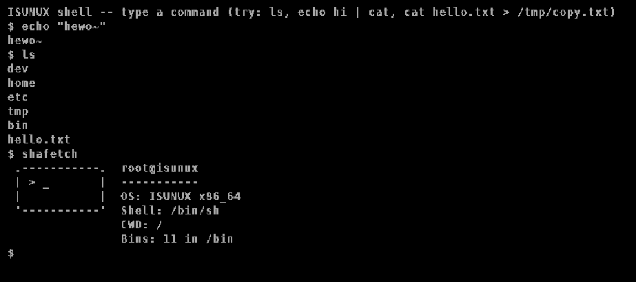

1. Overview
ISUNUX is a small, from-scratch x86_64 kernel project intended as a learning and experimentation platform. It is freestanding, boots via Limine, runs in 64-bit long mode, and provides a minimal userspace runtime on top of a small set of kernel services: syscalls, a simple VFS, process creation, and an ELF loader.

ISUNUX screenshot, this image might be outdated as the project is under active development.
The project is deliberately small and explicit. The goal is to exercise the plumbing of a Unix-like kernel — the boot handoff, the memory manager, the scheduler, the syscall boundary, the loader — rather than to chase feature completeness. Every subsystem here is hand-written and meant to be readable end to end in a sitting, not configured out of a framework.
Not a daily driver. Not POSIX-complete. Not fast. There is no disk
driver yet and nothing survives a reboot — the whole filesystem
is tmpfs, seeded from boot modules. Treat it as a
reference kernel to read, break, and extend, not as something to
install.
2. What's actually implemented
Rather than claim features it doesn't have, here is what currently boots and runs, organized the way a systems programmer would want to audit it:
| Subsystem | State | Notes |
|---|---|---|
| Boot / long mode | working | Hybrid BIOS+UEFI image via Limine; higher-half kernel |
| GDT / IDT / PIC / PIT / IRQ | working | Hand-rolled, see kernel/gdt.c, idt.c, pic.c |
Physical & virtual memory (pmm/vmm) |
partial | Basic frame allocator and paging; no swap, no COW yet |
| Processes / scheduler | partial | Cooperative round-robin, single core; fork() copies full address space |
| Syscalls | partial | ~18 syscalls: write, read, open, execve, fork, waitpid, exit, readdir, chdir, getcwd, and more |
| VFS + tmpfs + devfs | partial | In-memory only; /dev is an ops-table swap on a tmpfs node |
| ELF loader / exec | working | Generic ELF64/x86_64 PT_LOAD loader, doesn't gate on OSABI |
Userspace runtime (mini_libc) |
working | Static-linked crt0 + malloc/string/printf subset |
| Coreutils | partial | sh, ls, cat, echo, mkdir, pwd, touch, rm, clear, shafetch |
| Signals / job control | not started | No SIGINT/SIGCHLD yet — can't Ctrl-C a hung process |
| Disk I/O / persistence | not started | Everything is RAM-resident and boot-module-seeded |
| Permissions (uid/gid) | not started | One implicit identity, no mode bits |
This table is kept intentionally blunt. See roadmap for the tiered plan behind it.
3. Build & run
Prerequisites
- Host toolchain:
gcc,ld,nasm - ISO tooling:
xorriso - Emulator:
qemu-system-x86_64 maketo orchestrate the build
Commands
make # build kernel and embedded user programs
make iso # build bootable ISO (iso_root/myos.iso)
make run # build ISO and boot in QEMU headless (serial -> terminal)
make gui # build ISO and boot in QEMU with a visible window
make clean # remove build artifacts
make run passes -serial stdio -display none so
kernel serial output lands directly in your terminal.
make gui adds -display sdl but keeps serial
on stdio as well, which is usually the more useful combination while
debugging.
4. Architecture
Layout
isunux/
├── boot/ # pinned Limine bootloader binaries + config
├── kernel/
│ ├── kernel.c # boot protocol requests, early init, glue
│ ├── linker.ld # higher-half link layout
│ ├── gdt.c / idt.c / pic.c / pit.c / irq.c
│ ├── pmm.c / vmm.c # physical + virtual memory
│ ├── task.c / process.c / fork.c / exec.c
│ ├── elf.c # ELF64 userland loader
│ ├── vfs.c / tmpfs.c / devfs.c / pipe.c
│ └── syscall.c
├── lib/
│ ├── crt0.asm # userspace entry point
│ ├── mini_libc.h # syscall wrappers exposed to userland
│ ├── mini_malloc.c / mini_string.c / mini_printf.c
│ └── user_link.ld # userspace linker script (base 0x400000)
└── bin/
├── sh/ ls/ cat/ echo/ mkdir/ pwd/ rm/ touch/ clear/ shafetch/
└── hello/ # each dir = one standalone ELFHow a program gets built and shipped
Every directory under bin/ is a program —
the top-level Makefile auto-discovers them, so there is no
list to maintain. Each bin/<name>/main.c compiles
against the shared runtime in lib/ and links with
lib/user_link.ld into a standalone ELF at
bin/<name>/<name>. That ELF is staged onto the
ISO at iso_root/bin/<name> and declared as a Limine
boot module — it is never incbin'd into the kernel
image itself.
Writing a userspace program
Create bin/<name>/main.c implementing main(argc, argv). No custom _start — lib/crt0.asm supplies the entry point and calls main with the standard SysV stack layout:
#include "mini_libc.h"
#include "mini_printf.h"
int main(int argc, char **argv) {
printf("hello from %s\n", argv[0]);
return 0;
}
Run make — nothing else needs editing. The binary
appears on the ISO and is inspectable on the host with
readelf or objdump before you ever boot it.
5. Userland ABI notes
- Userspace programs load at a fixed virtual address,
0x400000(seelib/user_link.ld) — no ASLR or PIE yet. mini_libc.hexposes syscalls as thin wrappers:sys_write,sys_read,sys_open,sys_execve,sys_fork,sys_waitpid,sys_exit,sys_readdir,sys_chdir,sys_getcwd.main's return value becomes the process exit code.- All userspace binaries are statically linked against
mini_libc— there is no shared libc, no dynamic linker. - The current syscall numbering is ISUNUX's own; it does not (yet) match the Linux x86_64 ABI. See the roadmap for why that's changing.
6. Roadmap
The plan is tiered by what breaks first, not by what's exciting to build. Correctness before features, persistence before polish. This is the honest, currently-maintained priority order:
Tier 0 — correctness foundations
Must land before anything else is worth adding.
- Free address spaces and task slots on zombie reap — every
fork()+exit()currently leaks memory permanently. - Remove hardcoded buffer ceilings (e.g. a fixed
init_elf_buf[65536]) — silent failure on oversized input isn't Unix-like, it's fragile. - Copy-on-write
fork()— without it, the standard shellfork()+exec()pattern copies full address spaces every time.
Tier 1 — real multitasking, not a demo
- Signals —
SIGINT,SIGKILL,SIGTERM,SIGCHLDat minimum. Right now nothing can Ctrl-C a hung process. - Job control (
&, foreground, Ctrl-Z) — needs signals first. - Anonymous
mmap()—malloc()currently works off a fixed static arena. - Users, groups, and permission bits — everything today is one implicit identity.
Tier 2 — persistence and real I/O
- A block device driver (AHCI/ATA) — zero disk I/O exists today.
- A real on-disk filesystem (FAT first) and a real
mount(). - Persistence across reboot — probably the single most meaningful missing piece.
- A real console/tty layer with line discipline, instead of every program reimplementing backspace/Ctrl-C handling.
Tier 3 — shell & userland maturity
- Linux x86_64 syscall-number compatibility, to run unmodified static-linked Linux binaries. The ELF loader already handles generic PT_LOAD segments without gating on
e_ident[EI_OSABI], so this is purely a renumbering exercise while the table is still small (~18 entries). - Pipes and redirection wired into the shell (
|,>,<) —pipe.cexists at the kernel level already. - Environment variables and a
PATH-searchingexecve(). - More coreutils (
cp,mv,grep,ln) — becomes optional once Linux binary compat lands.
Tier 4 — polish
- Consistent
errno-equivalent error codes instead of bare-1. - A real init system —
/bin/shis currently hardcoded and bootstrapped directly inkernel.c. - Shell rc-file support.
- A test harness, so Tier 0–3 work doesn't silently regress.
Tier 5 and beyond — legitimacy, not felt gaps
- ASLR + PIE userland, SMP/multicore, swap, dynamic linking, a real clock/RTC subsystem.
- Self-hosting — compiling ISUNUX on ISUNUX, in the tradition of projects like ToaruOS.
- Panic/debugging infrastructure — kernel backtraces instead of a silent
hcf()halt. - A syslog / kernel log ring buffer readable from userland.
Tier 0 through 2 come first — they're the fundamentals. Tier 3 follows, focused on userland maturity via Linux static-binary compatibility. Tier 4 and beyond happen opportunistically after that.
7. Contributing & feedback
This is a learning project, and feedback is genuinely welcome — the author is learning alongside it. If you add a userspace program, consider adding a small test case or example input so others can exercise it without guessing at the calling convention.
What should ISUNUX's identity be, beyond "just another hobbyist Unix-like"? The initial goal — well documented, well commented, easy to learn, and a clean reference for anyone poking at kernel internals — is intact. Suggestions on where it should differentiate from there are wanted.
Read kernel/kernel.c first if you want the shortest path
to understanding boot-to-shell. From there, kernel/syscall.c
and lib/mini_libc.h together define the entire kernel/user
boundary.
8. License
ISUNUX is licensed under the Mozilla Public License 2.0.
MPL-2.0 is a file-level copyleft: modifications to MPL-licensed files
must stay MPL, but the license imposes no terms on separate files you
combine it with. See LICENSE in the repository root for
the full text.
Third-party components (the pinned Limine bootloader binaries under
boot/limine/) retain their own upstream licenses.